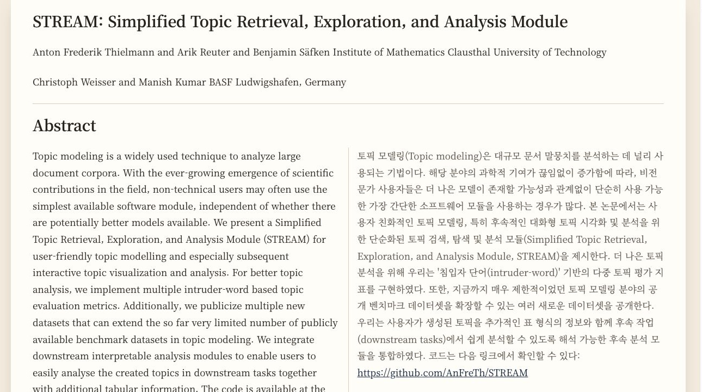
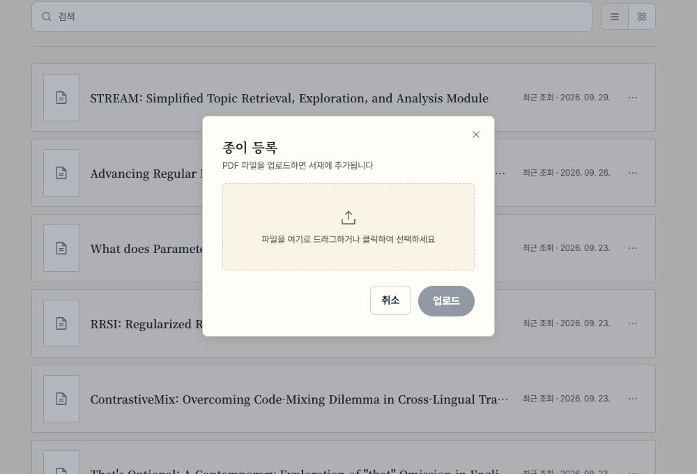
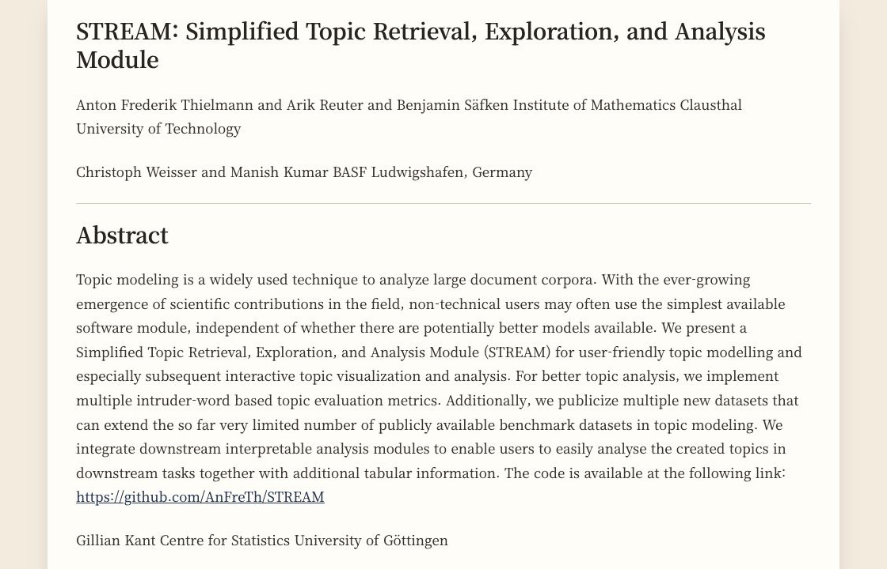
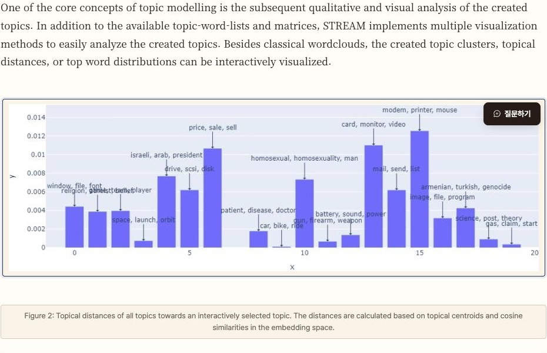
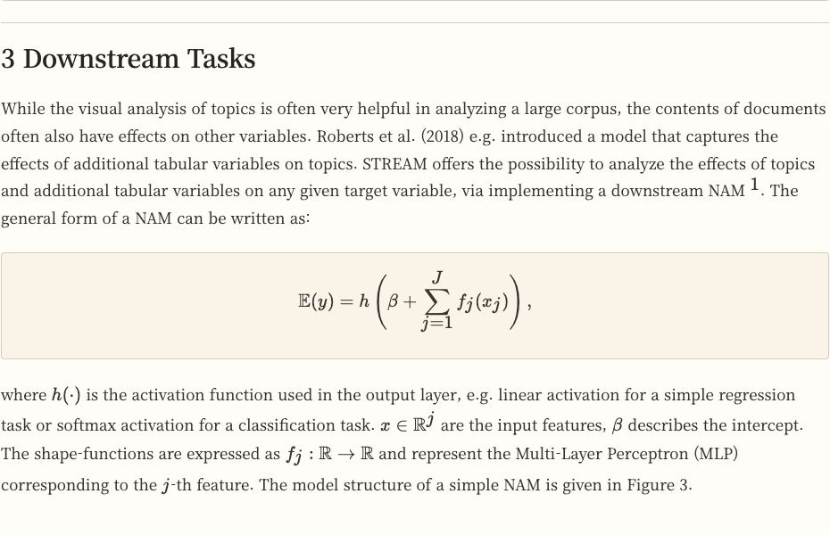
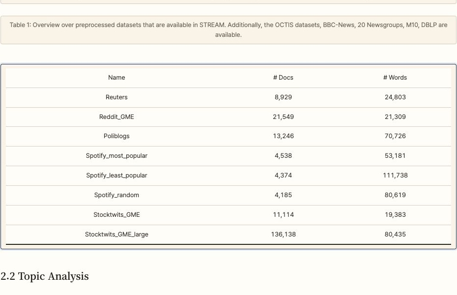
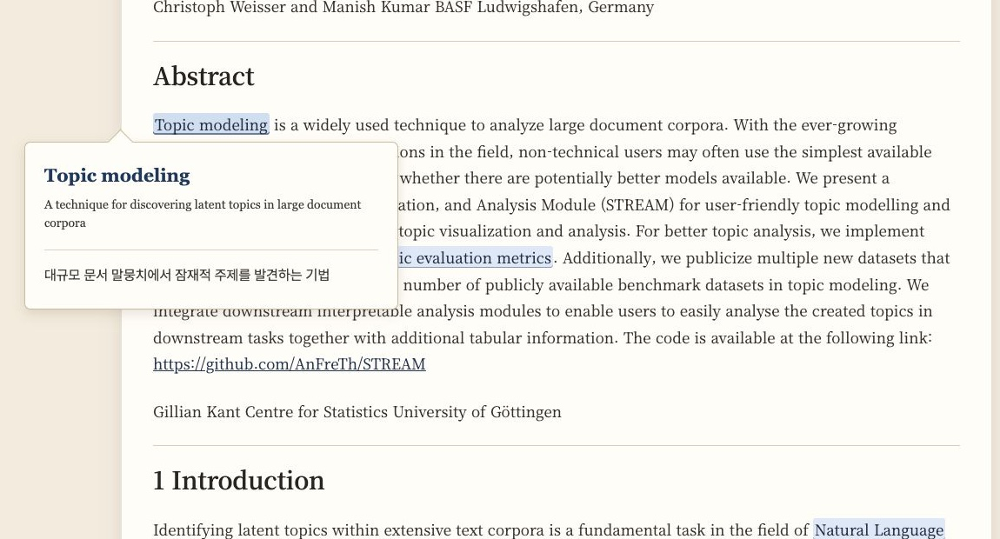
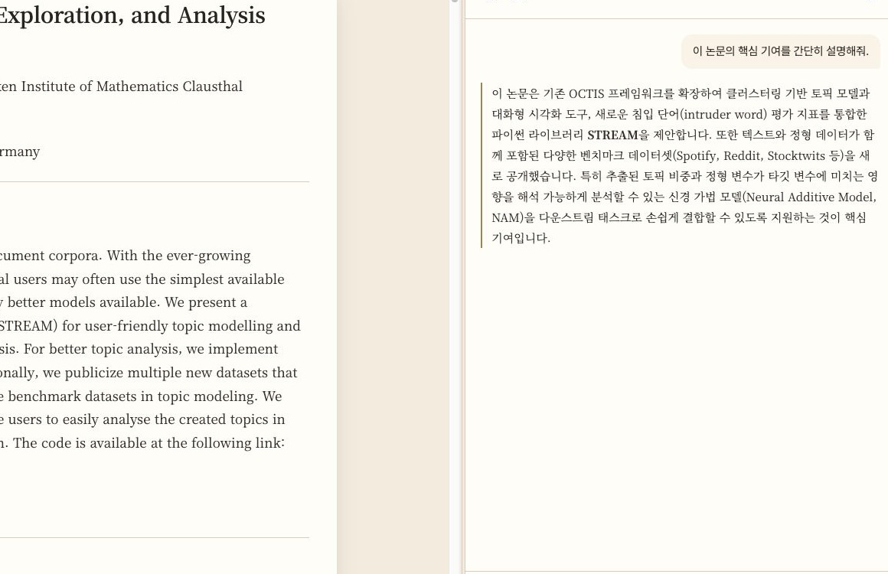
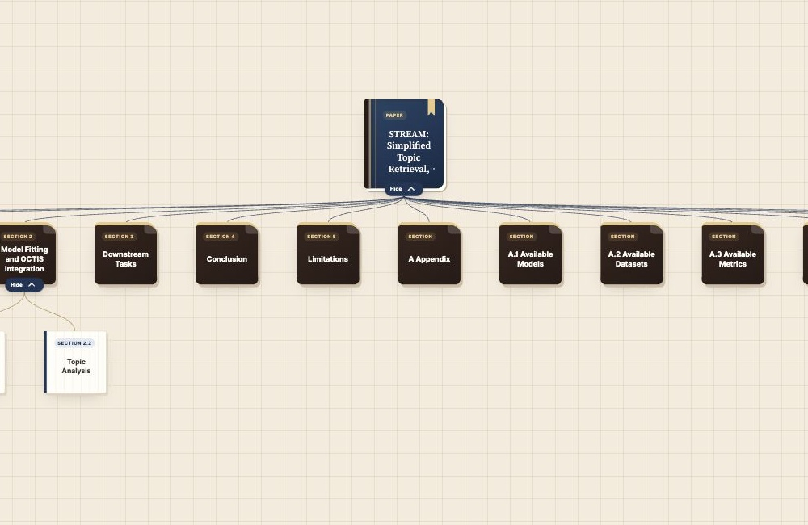
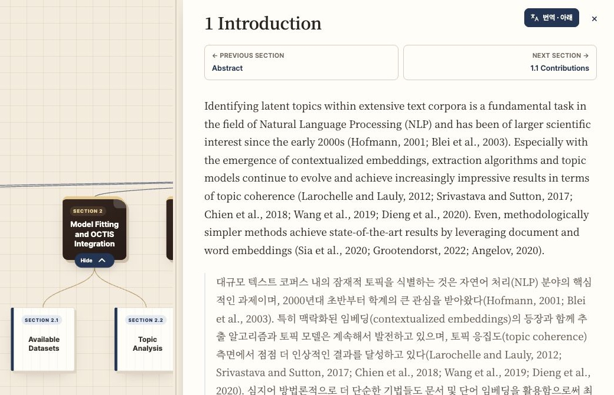

논문 리딩의
새로운 기준,
Paper Teacher!!
언어와 낯선 개념 앞에서 멈추지 않도록. 번역과 선행지식, AI 튜터와 지식 그래프가 논문을 이해하는 과정을 함께합니다.
로그인 또는 회원가입 후 서재에서 논문을 업로드할 수 있어요.

SOUND FAMILIAR?
논문 한 편을 읽는 일이
생각보다 어려웠던 이유.
영어 논문을 펼칠 때마다, 언어가 먼저 장벽이 되지 않았나요?
번역기를 돌렸는데도 논문 맥락과 맞지 않는 표현 때문에 더 헷갈린 적은 없나요?
모르는 전공 용어와 개념 때문에 읽던 흐름을 멈춘 적은 없나요?
원문 옆에서 번역을 비교하고, 필요한 선행지식을 확인하고, 막히는 부분을 AI 튜터에게 바로 물어보세요.
THE READING JOURNEY
업로드한 논문이
내 것이 되는 순간부터, 이해하는 순간까지.
기능을 오가느라 흐름이 끊기지 않도록, 한 곳에서 읽고 묻고 살펴보세요.
논문을 올리고,
내 서재에서 시작하세요.
읽고 싶은 PDF를 등록하면 내 서재에 담깁니다. 논문을 고르고, 다시 돌아와 읽을 수 있는 출발점입니다.

SCREEN 01 — UPLOAD & LIBRARY
논문을 읽는 데
집중할 수 있는 뷰어.
본문의 흐름을 따라가며 섹션, 그림, 표, 수식을 함께 살펴보세요. 읽다가 필요한 도움을 바로 이어서 받을 수 있습니다.




SCREEN 02 — PAPER VIEWER
영어 원문 옆에
한국어 번역을 함께.
원문을 가리지 않고 번역을 나란히 보세요. 표현을 비교하며 읽고, 필요한 때는 원문만으로 돌아갈 수 있습니다.
SCREEN 03 — BILINGUAL READING
낯선 개념은,
그 자리에서 확인하세요.
선행지식 표시를 켜면 논문 속 관련 용어가 드러납니다. 하이라이트를 누르면 그 논문의 문맥에 맞는 설명을 확인할 수 있습니다.

SCREEN 04 — PREREQUISITE KNOWLEDGE
읽던 부분을
그대로 인용해 물어보세요.
궁금한 문장을 드래그하거나 이미지·표를 클릭해 질문에 첨부하세요. AI 튜터가 논문의 맥락을 바탕으로 답하고, 이어서 질문할 수 있습니다.

SCREEN 05 — ASK WITH CONTEXT
한 편의 논문을
한눈에 펼쳐보세요.
섹션과 주요 개념이 어떻게 이어지는지 지식 그래프로 살펴보세요. 섹션을 누르면 해당 본문과 번역을 바로 읽을 수 있습니다.


SCREEN 06 — KNOWLEDGE GRAPH
READ WITH UNDERSTANDING
다음 논문은,
끝까지 이해하며 읽어보세요.
한 편을 올리고, 읽고, 묻고, 전체 흐름까지 확인하는 경험.
논문 업로드하고 시작하기로그인 또는 회원가입 후 서재에서 논문을 업로드할 수 있어요.